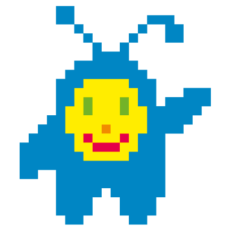

Dieses Jahr findet zum zweiten Mal europaweit die Code Week statt. In der Woche vom 10. bis 18. Oktober 2015 wollen wir von OffenesDresden.de die Gelegenheit nutzen, um mit Dir zusammen coole Veranstaltungen für programmierbegeisterte Mädchen und Jungen zu machen.

Sei ein Teil der Code Week in Dresden und melde Dich jetzt an!
per E-Mail,
bei Facebook
oder hier im Formular:
Wir geben keine Persönlichen Daten weiter und behalten uns vor Dich per E-Mail über diese und weitere Veranstaltungen zu informieren.
Veranstaltungen
Erstes Wochenende (10. und 11. Oktober 2015)
- Von den GeekGirlsCarrots kommt Jolanta und wird am 14. Oktober 2015 ab 19Uhr erstmalig eine Veranstaltung unter dem Motto Code Carrots angeboten. Dabei sollen insbesondere programmierbegeisterte Frauen angesprochen werden oder die, die es noch werden wollen. Zu Gast wird Almuth Sürmann von www.akili-innovation.com and Val Racheeva Gründerrin und CEO von WEFOUND.org sein. Und es findet im Impact Loft statt. Link zur Facebook Veranstaltungseinladung: link. Um Anmeldung wird gebeten.
Zweites Wochenende (17. und 18. Oktober 2015)
- Vom Medienkulturzentrum Dresden und dem OK Lab Dresden wird es am 17. Oktober 2015 Veranstaltungen für Jugendliche geben. Jugend hackt (Ost), was im Juni stattfand, hat gezeigt wie viel Spaß junge Menschen im kreativen Umgang mit Technik haben. Darum wird es einen Hacking-Day/Workshop mit Mini-Computern (Raspberry Pi uä.) geben. Spass und Kreativität im Umgang mit Technik und elektronischen Schaltkreisen stehen im Vordergrund. Die Veranstalltung findet im FabLab Dresden statt und beginnt am 17.10. um 9:00 Uhr. Um Anmeldung wird gebeten
- Von OffenesDresden.de und Open Data Dresden wird es ergänzend einen Open Data Hackathon geben. Spass und Kreativität sind auch hier von zentraler Bedeutung, ebenso wie der Umgang mit offenen Daten und deren Nutzen für alle Bürger. Die Veranstaltung findet im FabLab Dresden statt und beginnt am 17.10. um 11Uhr. Um Anmeldung wird gebeten.
Einladung
Programmcodes steuern unsere digitale Welt und damit unser tägliches Leben. Wer diese Sprache spricht, kann unsere Zukunft aktiv, individuell und kreativ mitgestalten. Darum ruft die EU in der Woche vom 10. bis 18. Oktober 2015 alle Kinder, Jugendliche und Erwachsene in ganz Europa wieder zum Programmieren auf. Auch du kannst da dabei sein.
Menschen sollen während der Code Week an die Welt der Technik herangeführt werden und tiefer in sie hinein tauchen können. Jungen Menschen sollen schon früh spielerisch erlernen, dass programmieren Spaß macht. Aber auch Ältere können das Programmieren lernen und weiter vertiefen. Das OK Lab Dresden möchte daher alle Interessierten einladen Veranstaltungen in diser Woche abzuhalten, sich daran zu beteiligen oder einfach zu besuchen, egal ob jung und alt.
Eine Übersicht aller Veranstaltungen in Europa zur Code Week findet sich auf events.codeweek.eu.
Ergänzend gibt es auch noch deutschsprachige Informationen auf www.codeweek.de.